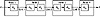

| Previous | Table of Contents | Next |
Algorithms for Export
Algorithms for export out of the United States must be approved by the U.S. government (actually, by the NSA—see Section 25.1). It is widely believed that these export-approved algorithms can be broken by the NSA. Although no one has admitted this on the record, these are some of the things the NSA is rumored to privately suggest to companies wishing to export their cryptographic products:
NSA gets a copy of the source code, but the algorithm’s details remain secret from everyone else. Certainly no one advertises any of these deliberate weaknesses, but beware if you buy a U.S. encryption product that has been approved for export.
Which is better, public-key cryptography or symmetric cryptography? This question doesn’t make any sense, but has been debated since public-key cryptography was invented. The debate assumes that the two types of cryptography can be compared on an equal footing. They can’t.
Needham and Schroeder [1159] pointed out that the number and length of messages are far greater with public-key algorithms than with symmetric algorithms. Their conclusion was that the symmetric algorithm was more efficient than the public-key algorithm. While true, this analysis overlooks the significant security benefits of public-key cryptography.
Whitfield Diffie writes [492,494]:
In viewing public-key cryptography as a new form of cryptosystem rather than a new form of key management, I set the stage for criticism on grounds of both security and performance. Opponents were quick to point out that the RSA system ran about one-thousandth as fast as DES and required keys about ten times as large. Although it had been obvious from the beginning that the use of public key systems could be limited to exchanging keys for conventional [symmetric] cryptography, it was not immediately clear that this was necessary. In this context, the proposal to build hybrid systems [879] was hailed as a discovery in its own right.
Public-key cryptography and symmetric cryptography are different sorts of animals; they solve different sorts of problems. Symmetric cryptography is best for encrypting data. It is orders of magnitude faster and is not susceptible to chosen-ciphertext attacks. Public-key cryptography can do things that symmetric cryptography can’t; it is best for key management and a myriad of protocols discussed in Part I.
Other primitives were discussed in Part I: one-way hash functions, message authentication codes, and so on. Table 10.1 lists different types of algorithms and their properties [804].
This is the classic Alice and Bob problem: Alice wants to send Bob a secure message. What does she do? She encrypts the message.
In theory, this encryption can take place at any layer in the OSI (Open Systems Interconnect) communications model. (See the OSI security architecture standard for more information [305].) In practice, it takes place either at the lowest layers (one and two) or at higher layers. If it takes place at the lowest layers, it is called link-by-link encryption; everything going through a particular data link is encrypted. If it takes place at higher layers, it is called end-to-end encryption; the data are encrypted selectively and stay encrypted until they are decrypted by the intended final recipient. Each approach has its own benefits and drawbacks.
| Table 10.1 Classes of Algorithms | ||||
|---|---|---|---|---|
| Algorithm | Confidentiality | Authentication | Integrity | Key Management |
| Symmetric encryption algorithms | Yes | No | No | Yes |
| Public-key encryption algorithms | Yes | No | No | Yes |
| Digital signature algorithms | No | Yes | Yes | No |
| Key-agreement algorithms | Yes | Optional | No | Yes |
| One-way hash functions | No | No | Yes | No |
| Message authentication codes | No | Yes | Yes | No |
Link-by-Link Encryption
The easiest place to add encryption is at the physical layer (see Figure 10.1). This is called link-by-link encryption. The interfaces to the physical layer are generally standardized and it is easy to connect hardware encryption devices at this point. These devices encrypt all data passing through them, including data, routing information, and protocol information. They can be used on any type of digital communication link. On the other hand, any intelligent switching or storing nodes between the sender and the receiver need to decrypt the data stream before processing it.
This type of encryption is very effective. Because everything is encrypted, a cryptanalyst can get no information about the structure of the information. He has no idea who is talking to whom, how long the messages they are sending are, what times of day they communicate, and so on. This is called traffic-flow security: the enemy is not only denied access to the information, but also access to the knowledge of where and how much information is flowing.
Security does not depend on any traffic management techniques. Key management is also simple; only the two endpoints of the line need a common key, and they can change their key independently from the rest of the network.

Figure 10.1 Link encryption.
| Previous | Table of Contents | Next |
){kind=link}
){kind=link}